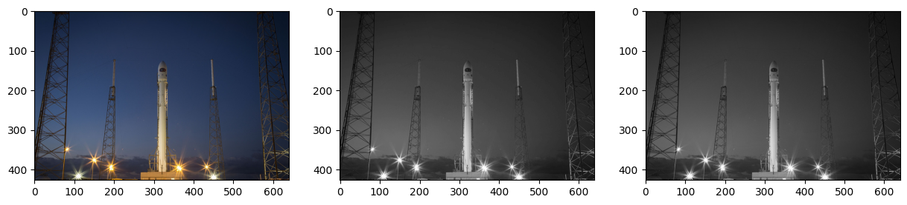
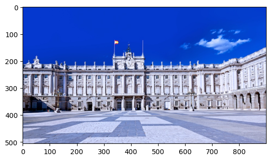
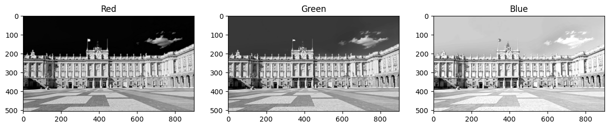
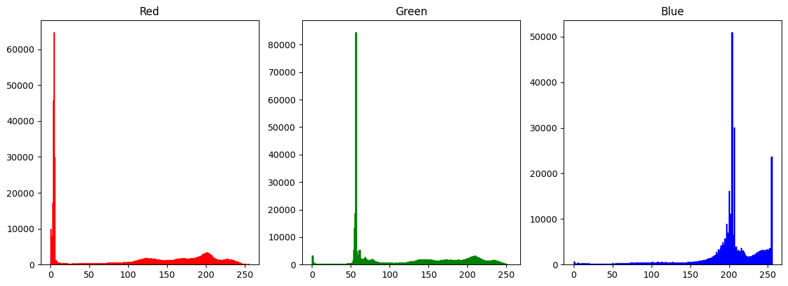
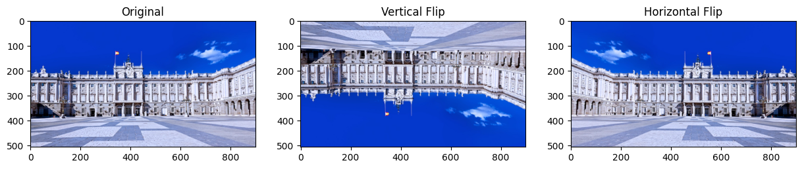
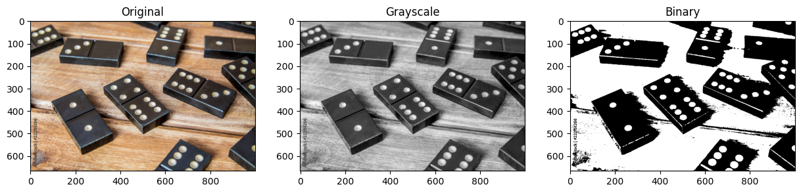
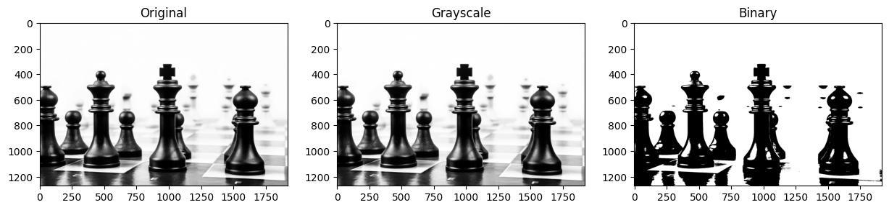
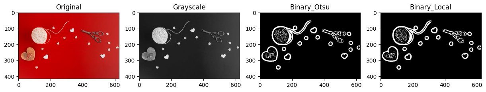
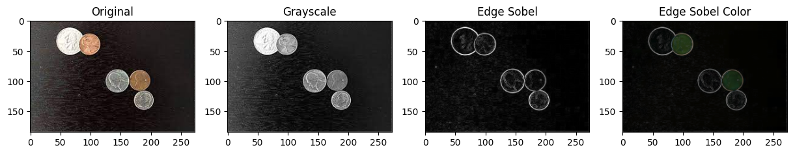
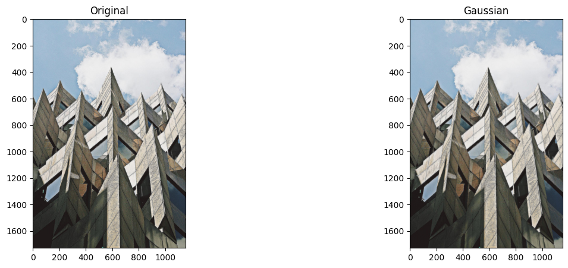

import numpy as np
import pandas as pd
import skimage
from skimage import data, color
import matplotlib.pyplot as pltrocket_image = data.rocket()
print(rocket_image.shape)
grayscale = color.rgb2gray(rocket_image)
print(grayscale.shape)
color_image = color.gray2rgb(grayscale)
print(color_image.shape)(427, 640, 3)
(427, 640)
(427, 640, 3)# Suplot of 3 images in a single row
f, ax = plt.subplots(nrows=1, ncols=3, figsize = (15,5))
ax[0].imshow(rocket_image)
ax[1].imshow(grayscale, cmap='gray')
ax[2].imshow(color_image)
plt.show()
madrid_image = plt.imread("./data/madrid.jpeg")
plt.imshow(madrid_image)
plt.show()
# Getting Red Channel of the Image
red = madrid_image[:,:,0]
# Getting Green Channel of the Image
green = madrid_image[:,:,1]
# Getting Blue Channel of the Image
blue = madrid_image[:,:,2]
# Suplot of 3 images in a single row
f, ax = plt.subplots(nrows=1, ncols=3, figsize = (15,5))
ax[0].imshow(red, cmap='gray')
ax[0].set_title("Red")
ax[1].imshow(green, cmap='gray')
ax[1].set_title("Green")
ax[2].imshow(blue, cmap='gray') # Image has higher blue value
ax[2].set_title("Blue")
plt.show()
# Plot histograms of each image channel
f, ax = plt.subplots(nrows=1, ncols=3, figsize = (15,5))
ax[0].hist(red.ravel(), bins=256, range=(0, 255), fc='r', ec='r')
ax[0].set_title("Red")
ax[1].hist(green.ravel(), bins=256, range=(0, 255), fc='g', ec='g')
ax[1].set_title("Green")
ax[2].hist(blue.ravel(), bins=256, range=(0, 255), fc='b', ec='b')
ax[2].set_title("Blue")
plt.show()
vertical_flip = np.flipud(madrid_image)
horizontal_flip = np.fliplr(madrid_image)
# Plot 3 images: Original, Vertical Flip and Horizontal Flip
f, ax = plt.subplots(nrows=1, ncols=3, figsize = (15,5))
ax[0].imshow(madrid_image)
ax[0].set_title("Original")
ax[1].imshow(vertical_flip)
ax[1].set_title("Vertical Flip")
ax[2].imshow(horizontal_flip)
ax[2].set_title("Horizontal Flip")
plt.show()
dominos_image = plt.imread("./data/dominos.jpeg")
grayscale_domino = np.round(color.rgb2gray(dominos_image) * 255)
threshold = 127
binary = (grayscale_domino > threshold).astype(int) * 255
# Plot 3 images: Original, Grayscale, Binary
f, ax = plt.subplots(nrows=1, ncols=3, figsize = (15,5))
ax[0].imshow(dominos_image)
ax[0].set_title("Original")
ax[1].imshow(grayscale_domino, cmap='gray')
ax[1].set_title("Grayscale")
ax[2].imshow(binary, cmap='gray')
ax[2].set_title("Binary")
plt.show()
from skimage.filters import threshold_otsu
chess_image = plt.imread("./data/Chess.jpeg")
grayscale_chess = np.round(color.rgb2gray(chess_image) * 255)
threshold = threshold_otsu(grayscale_chess)
print(f"Threshold Value {threshold}")
binary = (grayscale_chess > threshold).astype(int) * 255
# Plot 3 images: Original, Grayscale, Binary
f, ax = plt.subplots(nrows=1, ncols=3, figsize = (15,5))
ax[0].imshow(chess_image)
ax[0].set_title("Original")
ax[1].imshow(grayscale_chess, cmap='gray')
ax[1].set_title("Grayscale")
ax[2].imshow(binary, cmap='gray')
ax[2].set_title("Binary")
plt.show()Threshold Value 140.947265625
from skimage.filters import threshold_otsu, threshold_local
tools_image = plt.imread("./data/tools_image.jpeg")
grayscale_tools_image = np.round(color.rgb2gray(tools_image) * 255)
threshold = threshold_otsu(grayscale_tools_image)
print(f"Threshold Value {threshold}")
binary = (grayscale_tools_image > threshold).astype(int) * 255
threshold = threshold_local(grayscale_tools_image, block_size=35, offset=10)
# print(f"Threshold Value {threshold}") # Prints Entire 2D Array Value
binary = (grayscale_tools_image < threshold).astype(int) * 255
# Plot 3 images: Original, Grayscale, Binary Global, Binary Local
f, ax = plt.subplots(nrows=1, ncols=4, figsize = (15,5))
ax[0].imshow(tools_image)
ax[0].set_title("Original")
ax[1].imshow(grayscale_tools_image, cmap='gray')
ax[1].set_title("Grayscale")
ax[2].imshow(binary, cmap='gray')
ax[2].set_title("Binary_Otsu")
ax[3].imshow(binary, cmap='gray')
ax[3].set_title("Binary_Local")
plt.show()Threshold Value 117.46875
from skimage.filters import sobel
image_coins = plt.imread("./data/coins.jpeg")
grayscale_coins = np.round(color.rgb2gray(image_coins) * 255)
edge_sobel = sobel(grayscale_coins)
edge_sobel_color = sobel(image_coins)
# PLot 4 images: Original, Grayscale, Edge Sobel, Edge Sobel Color
f, ax = plt.subplots(nrows=1, ncols=4, figsize = (15,5))
ax[0].imshow(image_coins)
ax[0].set_title("Original")
ax[1].imshow(grayscale_coins, cmap='gray')
ax[1].set_title("Grayscale")
ax[2].imshow(edge_sobel, cmap='gray')
ax[2].set_title("Edge Sobel")
ax[3].imshow(edge_sobel_color)
ax[3].set_title("Edge Sobel Color")
plt.show()
from skimage.filters import gaussian
building_image = plt.imread("./data/building.jpeg")
gaussian_image = gaussian(building_image, channel_axis = 2)
# Plot 2 images: Original, Gaussian
f, ax = plt.subplots(nrows=1, ncols=2, figsize = (15,5))
ax[0].imshow(building_image)
ax[0].set_title("Original")
ax[1].imshow(gaussian_image)
ax[1].set_title("Gaussian")
plt.show()
from skimage import exposure